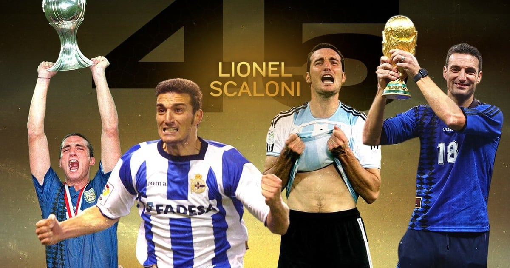

EL MOTOR DE LA SCALONETA
Lionel Scaloni es un exjugador y entrenador de fútbol argentino. Se desempeñó como volante lateral derecho y defensor, durante sus años de jugador. Jugó en la primera división de Argentina, de España e Italia. Dirigió la selección sub-20, entre 2017 y 2018. Dirige la selección argentina de futbol desde 2018.
Tras la escandalosa salida de Jorge Sampaoli como DT de la selección mayor, asumió de manera interina el cargo, a pedido de las autoridades de la Asociación del Fútbol Argentino (AFA).
Fue confirmado por la AFA al frente de la selección mayor de fútbol y se fijó como meta lograr la esquiva Copa América.
Promovió una renovación generacional de jugadores, siempre privilegiando y manteniendo al número 10 del equipo: su tocayo Lionel Messi, como la columna vertebral del equipo.
Salió campeón de América con la selección nacional de su país. Luego de 28 años en los que el torneo fue esquivo para la Argentina, finalmente, el equipo, bajo su dirección técnica, alzó la copa, que habían ganado por última vez en el año 1993.
Clasificó a la selección para el Mundial de Catar 2022, a celebrarse entre el 20 de noviembre y 18 de diciembre
Obtuvo el campeonato Finalissima, conocido también como Copa de Campeones Conmebol-UEFA.
El furor de la “Scaloneta”
Se impuso el apodo de la scaloneta, de modo oficial, traccionado por la fantástica performance del equipo.
Aunque existe aún confusión respecto de su creador, el periodista deportivo de la señal de cable TyC Sports, “Gringo” Cingolani, se adjudicó la singular creación del vocablo que se volvió un furor.
Se erigió en una marca registrada y un producto comercial que vende tazas, remeras, entre otros, con la leyenda de la scaloneta.
El apodo logró ser TT en Twitter, tras la goleada del equipo a Ecuador, durante la Copa América 2021.